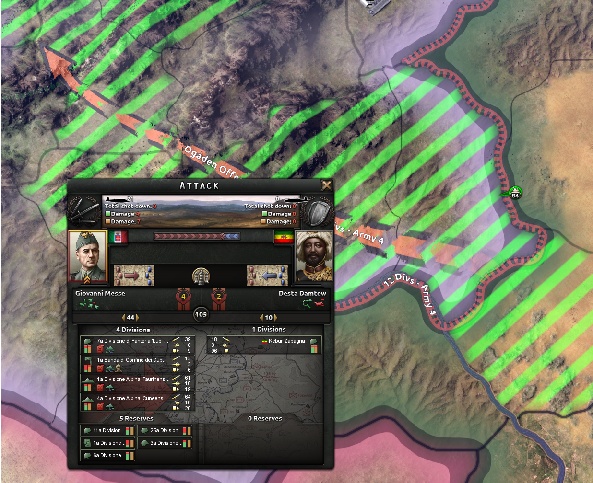
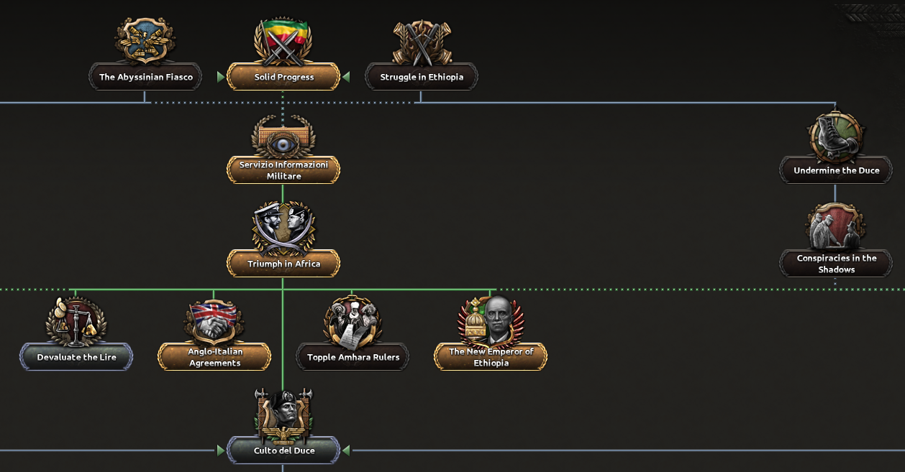
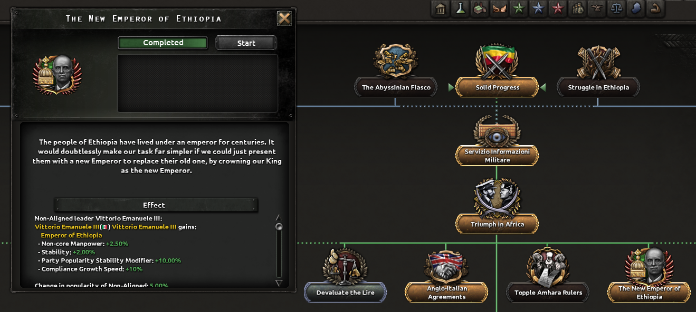
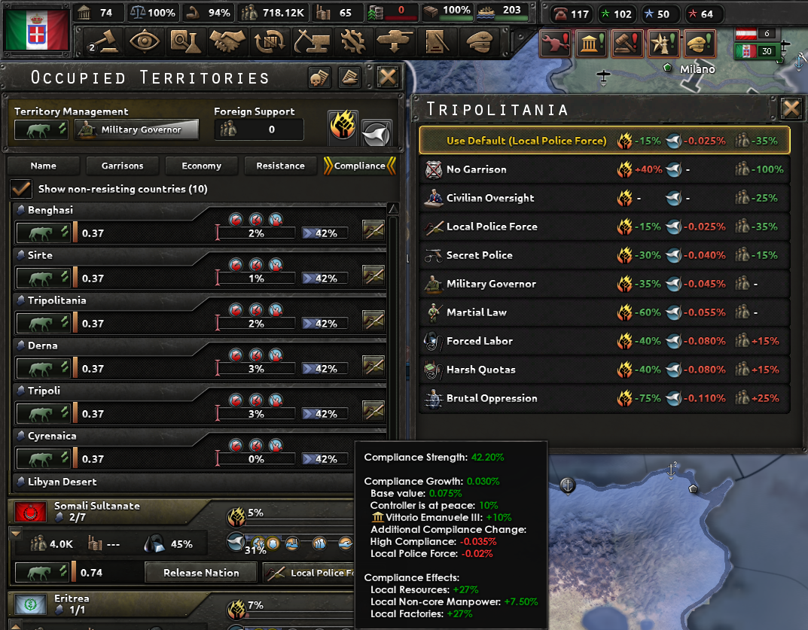
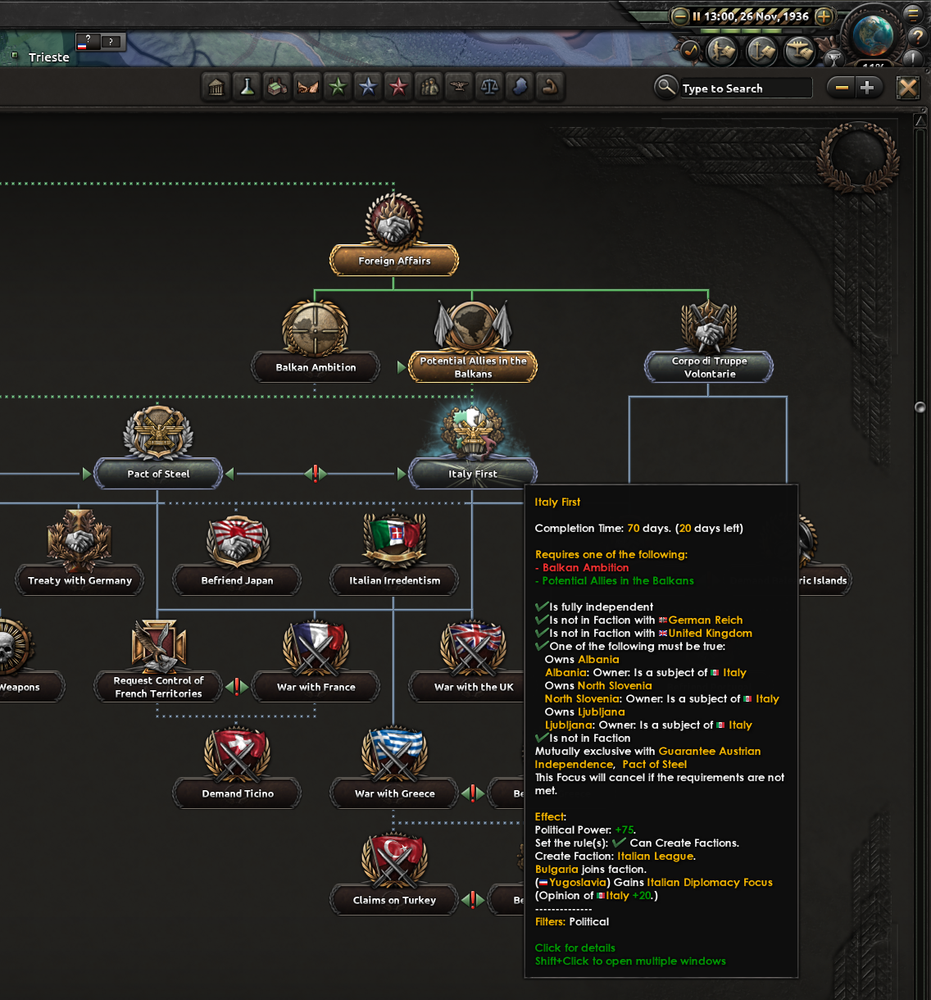
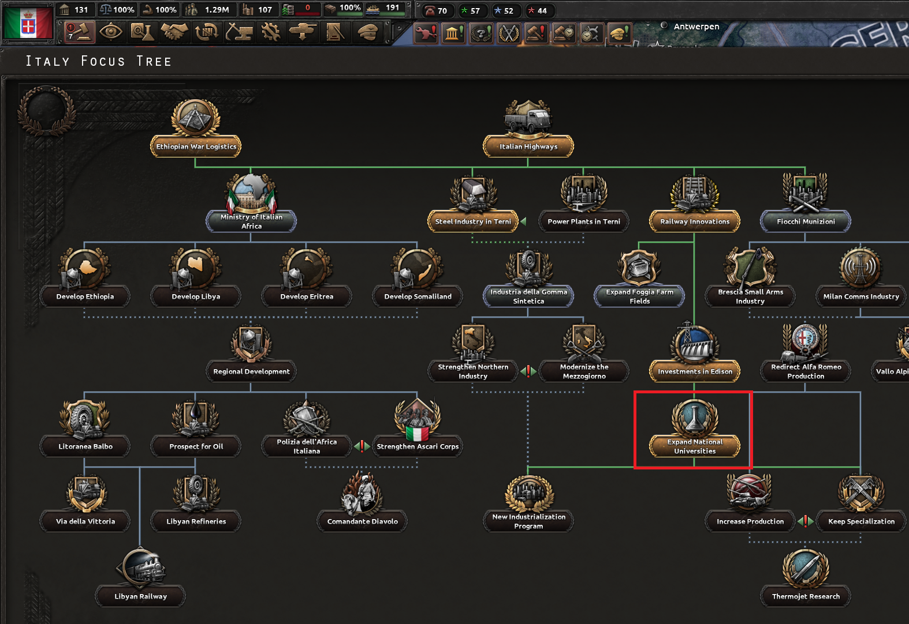
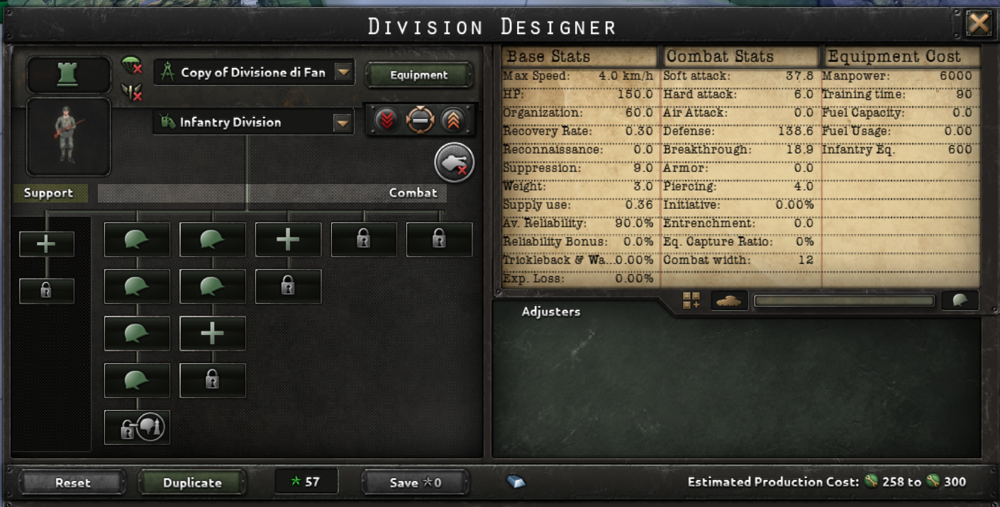
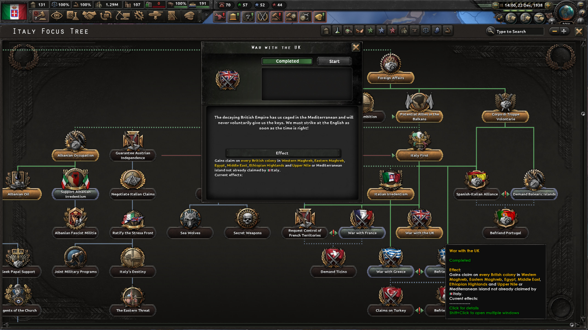
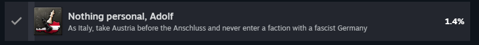

苦しかったなあ・・・このゲームは本当に苦しかったよ。
評価する以前にゲームシステムとゲームバランスとゲーム難易度の錯綜が激しかった印象だ。
これをゲームと呼んで良いのかどうか甚だ疑問視しているが、一つの結論には
辿り着けたのでご紹介としたい。
プレイ時間は約750時間ほどだが、そこまで充実した生活だったのかは定かではない。
さて、このゲームのコンセプトだが、ズバリこれだ。。
「 戦争が始まってしまう前に勝敗を決してしまえ 」
ちょっと矛盾してるかも知れないが、何度かやっているとそういうゲームだという事が分かってくる。
もちろん戦争中のきめ細かな操作によって勝敗が分かれる事もあるが、どちらかというと
司令官としてどう振る舞うかがキーポイントになってくる。闇雲に個別部隊にチャカチャカ指示しても
勝利を呼び込む事はできない。かなり前もっての計画と統率性が大事なゲームであるという事を
ここでは強調しておきたい。
本編を始める前に、ちょっとズレた視点を書いておこう。「Hearts of Iron 4」を遊ぶためには
ベーシックな本体のみを購入する事で遊べるようになっている。しかし、追加DLCを買わないと
国家方針ツリー（後述）を選べない仕組みになっている国もある。本サイトではイタリア紹介になるが、
記載している内容はイタリア国家方針がDLC拡張パックによる一新されたもので紹介としている。
そのため、ベーシックな本体のみの購入だと、本記事の参考とは異なる内容となってしまうかもしれないので
ご了承いただきたい。
DLC名称：Hearts of Iron IV: By Blood Alone
※※※文章表現について※※※※※※※※
2022年以降、2025/02/18の現在においても現実世界の情勢が非常に厳しい内容となっております。
本サイトの表現は過激な表現が多く、現実世界の戦争状態を考えると、好ましくない表現、
不適切な表現が多数あるという視点を重々承知の上となります。
ギリギリのラインを保ちつつご紹介したいと思います。
※※※※※※※※※※※※※※※※※
では、始めようじゃないか。我々は今回、イタリアで世界に対して宣戦布告を行っていくとしよう。
まずは大前提となるグランドプランを提示しておこうじゃないか。
選んだ国
Italy （イタリア）
ゴール
イタリアが主導権を握り、第二次世界大戦の最大の敵イギリスを屈服させ、我らが勝利した状態で戦争を終結させる。
主導権がドイツであってはならない。我らイタリアが実権を握ること！
※補足１ ゲームとしては、国家方針ツリー「Italy First」および「War with the UK」を取得して、戦争を仕掛ける事。
※補足２ ドイツのファクション「Axis」に加盟しない事。
制限ルール
速ｘｘｘ攻撃を行わない事。（あらゆるゲームで言える事だが、対ＣＯＭで初期ラッシュは大概決まるのでゲーム性を損ねる）
最強理論は狙わない。ある程度途中で損をしても良いので解説寄りとする事。
アメリカ軍が介入してきたら”負け”と判断する。つまり、1941年頃には戦争を終結させないといけない。
緩和ルール
アイアンマンモードにしない（セーブ・ロードはOKとする）
ドイツとの関係性は任意とする（ドイツを滅ぼす必要性はない）
本作品は、１９３6年から開始するか、1939年から開始するかが選べるようになっている。ここはあまり気にせず
1936年開始を選択して始めよう。さて、初期状態でどうなっているか？きちんと情勢を把握しよう。
イタリアの場合は、突然ではあるが「エチオピア戦争」が既に発生している状態からの開始となる。
「このゲーム。まず内政という考えではなく、軍隊ありきなのだよ。」
この図を見て欲しい。エチオピアｖｓイタリアの構図である。

エチオピア軍勢は７－３０。こちらイタリアは４６という軍隊を保持している。順当にいけば、負ける事はまずないだろう。
ここではエチオピアを降伏させるための手筋を紹介しておこう。
・陸軍を編成し、配置に付かせる。
・陸軍は北部と南部のいずれからも侵攻させる。
・陸軍は個々任意に司令官を付けて登録する事。また、総司令官は必ずつけておく事。
以上が出来ていれば、エチオピアは容易に攻略できるだろう。ただ、これだけで良いのか？
確かにこれで攻略は出来ると言えば出来るのだが、とある設定をしていないだけで戦争は長引いてしまう。
後、必ずやっておかなければならない事は何か？それはもう、戦略ゲームとして忘れていけない。
「空軍」の存在である。後半でも出てくるが「空軍」の配備は絶対に行う様にしよう。

少々分かり難いが、空軍はイタリアはそれなりに初期で保持している。空軍の移動は非常に高速なので
画面のスクリーンには3部隊しか空軍が存在しないが、イタリア本土に多数の空軍が待機しているはずだ。
それら空軍を全てこのエチオピア戦線の方に持ってくるようにしよう。
あと、エチオピアの領土は２つの区画に分かれている。なので、いずれの区画にも
空軍がきちんと行き届くように指示しておこう。
あと、空軍は空軍同士を行う機体と、陸軍に対する機体があるので、いずれも適宜配置する事だ。
エチオピア戦線の場合、空軍は皆無に等しいので数量はあまり気にしなくて良い。０にさえならなければOKだ。

戦闘状況を少し見てみよう。我々イタリア軍は多数の軍備を備えており、敵の編成は1部隊のみ。
空軍についても配備していたおかげで、空軍からのアドバンテージが付いている事が見て取れる。
本ゲーム、基本的には守っていれば強いのだが、この空軍が無いとスタミナゲージはどんどん消費していく。
エチオピア戦の場合は、とにかく空軍がほとんど出てこない。なので幾ばくかの空軍がサポートに回れば
難なく進められるだろう。
さて、陸軍と空軍は整った。海軍はどうするのだろうか？
エチオピア戦の場合、海軍は特に介入する余地はない。ここでは特に動く事はせず、次に進んで構わない。
ただし、イタリアは第二次世界大戦では「VSイギリス海軍」の死闘が待ち受けている。そのため、
この時点である程度、編成をしておいても損はしないだろう。本紹介記事では、念のためトレーニングは行うようにしておいた。
トレーニングを行う事で、石油を消費するが、海軍ポイントはDailyで得られる事が出来る。
第二次世界大戦が始まるまで、海軍戦闘はほぼないので、トレーニングをONにして海軍ポイントを
稼いでおくのは決して無駄ではないと考える。
おっと、そろそろエチオピア戦も終結直前だ。

相手国の首都は赤い星マークで表示されている。原則このエリアを落とすようにすれば良い。
当初のプランでは北部と南部の両方から挟み撃ちで攻撃を仕掛けていたので、最終的には
この首都を挟み込むようにして攻め落とせると、陥落は容易だろう。
進軍を進めるうちに・・・

エチオピア戦は無事に終了した。ではこの画面は一体なんだろうか？
領土を自軍領土に塗り替えて終わりではないのか？
「 講和会議をもって戦争を終結させるのである 」
ただし、エチオピア戦は参加者がイタリアのみのため、講和というか独断で決める事になる。
さて、どうしたものかと考えた所、左上の「Ｄｅｍａｎｄｓ」に幾つか種類がある事に気付いただろうか。
ここでは少しこれを紹介しておきたい。
ＴａｋｅＳｔａｔｅ ・・・ 領土を自国として併合する。その土地の人達からの反発は強い。
Ｌｉｂｅｒａｔｅ ・・・ 敗戦国のいずれかが占領していた国を解放させ、復興させる。
Puppet ・・・ 傀儡国として統治する。自軍領土ではないが今後様々な支援をしてもらえる。
Ｃｈａｎｇｅ government ・・・ 敗戦国のイデオロギーを変える。これは強制である。
Ｔａｋｅ Navy ・・・ 海軍を獲得できる。エチオピアの場合、これは選択できない。
エチオピアの場合、その土地の反発（Resistance）が大きいため、ここでは一括で傀儡とした。
※補足※
細かい所を付くと、Rubber（ゴム）が産出される領土はTakeStateを選んでも良いかも知れない。
ただ、自国領土に併合するので、反発（Resistance）の上昇に対して、一定の兵力を割いて抑止する必要がある。
コントロール力に自信がある人なら、一部リソース資源を取るためにその選択を行っても良いだろう。
また、そもそもこのエリアを支配する気が無いなら、Liberateで適用に分散させてしまってもよい。
さて、一つの戦争が終結したが、本紹介ではここでゲームエンドではない。第二次世界大戦はこれから始まるのである。
そのため、幾つかの方針を考えておこう。方針というキーワードでピンとくるのは「国家方針」だろう。
イタリアのツリーを見てみよう。全体的に俯瞰すると全然見えなくなるので、かいつまんで紹介とする。

そもそも、国家方針とは何なのか？それは一言で言い表すのは難しいため、事例をそのまま見て行ってもらえると助かる。
上記は国家方針を取ってきた一例であるので紹介とする。
Solid Progress ・・・ エチオピア戦で自動的に獲得済。軍の強さ、内政力、ファシズム影響などに効果あり。
Servizio Informazioni Militare ・・・ スパイ機関の設立が行える。1名スパイが雇える。
Triumph in Africa ・・・ 軍の強さ、内政力、など。Italian Occupation of Ethiopia があるがあまり気にしなくて良い。
Anglo-Italian Agreements ・・・ 何らかの協定。気にしなくて良い。
The NewEmperor of Ethiopia ・・・ エチオピア方面で新しいエンペラーの誕生。色々な効果が期待できる。
原則、”問題のなさそうなもの”を取捨選択してきているつもりである。本作品は方針によっては歴史を塗り替えるような選択肢に
到達してしまう事があるので、気を付けないといけない。
ところで、一つ気になる点といえば、下記だろうか。取得した効果をよーく見てみよう。

どうだろう。エチオピアといえばやはり、ヴィットーリオ・エマヌエーレ3世（Vittorio Emanuele III）だろうか。
レジスタンスを抑止する効果として、彼の名がここに記載されているが、本質的にそういう事がゲームとして許される表現なのだろうか。
史実については深い分析は危うい（知識が無く、学が無いので）ため、ここでは割愛するが
彼の名はここで明記しておくに留める事とする。

というわけで、Complianceの向上率が上がります。本ゲームでは助かるのでこれは選択としました。
さて・・・本戦が始まる前に、この国と交渉をしておこうか。
【 オーストリアに対して、イタリアから宣戦布告を行う 】
交渉とは何か。それはつまり、無駄死にせずに最適な選択を行っていただく事にある。それはつまり、宣戦布告なのである。
ドイツがオーストリア併合を進めてしまう前に、我らイタリアと一致団結しておこうではないか。
それでは、戦闘開始前の状態を少し解説してみよう。

交渉の内容はこうだ。
・イタリアはオーストリアに対して、宣戦布告を行っている。
侵攻開始宣言まで230日の期間を与える。現在は７２日経過しており、予定通りであれば 1936 October 29 にて進軍開始である。
前線には既に軍隊を配備している。戦闘開始になるまではトレーニングを積んでおくとしようじゃないか。
ただし、ここで気を付けなければならないのは以下の点だ。
・フロントラインは必ず設定しておく事。
・戦闘開始前まではトレーニングしておく事。
・特定の能力を有する指揮官を配置しているなら、そのタイプの軍隊を使用する事。
その他諸々のセッティングは気になる所だが、大筋間違っていなければＯＫだ。
戦闘については少し別に章立てをして解説といきたい。ここではまず、オーストリアには申し訳ないが
比較的単純に勝利できるので、割愛とする。
さて、オーストリアが無事にイタリアと一致団結してくれるようになったおかげで、
幾つかの資源および生産施設を利用できるようになった。レジスタンスは多少あるがそこまで高い数値を
示す事はないので、問題なく進められるレベルである。

１９３７年２月３日。無事に制圧完了となった。
それでは、Intel Ledgerを見てみよう。
Civilian factory ・・・ ２９
Military factory ・・・ ２４
Naval dockyard ・・・ １５ （変化なし）
Civilian Factoryは生産工場の様なものであり、様々な建造物を建設していく際に必要となる。
Military Factoryは軍事工場の様なものであり、戦闘機や戦車、歩兵銃などの軍隊向けの装備をよりより生産できるようになる。
Naval dockyardは海軍工場の様なものであり、戦艦や潜水艦、そして忘れてはならないがConvoyの生産にも本施設は必要となる。
これらを上手くバランスを考えて建設してし続けていくのが本ゲームの一つのコア要素となる。
どういうバランスを取るのかは、選んだ国々と、そのプレイヤーがやってみたい方針によって決まるだろう。
本紹介では、ひとまず初級的な観点として下記のバランスで生産していく事とした。
・生産数が２つ以上で回せる様にするべく、Civilian-factoryが１８個になるまでは建設し続ける事。
本作では、１つの建造物生成につき１５個のリソースが回される。なので２つ以上の建造を同時に進めたい場合は
最低でも１６必要となるためだ。また、RubberやChromiumが不足しがちになるので２，３個はTradedGoodsに
回せるように確保としておきたい。
・海軍用のNaval-dockyardを幾ばくか建設する事。
イタリアでは本戦が始まった時、地中海を何とかしなければならない。
そのため、より多くの海軍が必要となる。デフォルトではNaval-dockyardが１５あるが
Submarine建造に１０個以上、Destroyer建造に１０個以上、Convoyを１個以上
と考えた場合、最低ラインでも２１個は用意する事を念頭におく。
・スパイの育成は、初期は対応せず、Civilian-factoryが21個以上になり次第、開始とする。
スパイで色々と出来る事はあるが、本作戦では防衛とレジスタンス制圧に徹する事とし、
他国へのオペレーションは行わない事とする。
さてと・・・諸君。本オペレーションの目的を今一度記載しようじゃないか。
【 国家方針 Italy First を選択するのである！ 】
そんな国家方針は要らないだと？？それを言ってしまったら元も子もないだろう。
本投稿ではこれをやる事自体を目的としているのだ。安心安全、快適な最適化理論を選びたいのなら
別のホームページを検索すると良いだろう。
そういうわけで、これだ。

国家方針としては「Foreign Affairs」ー「Potential Allies in the Bulkans」を経て「Italy First」が取得できる。
計画的に取らないと行けない事はないが、個人的にはPoriticalPower +75は美味しいので早めに取ってしまっても損はしないと思っている。
これを取ったら次々と他国が我々が掲げ上げる「Italian League」に加盟してくれるはずだ！ 楽しみだね！！

1937年５月１３日。
さて、そうこうしている内に次のイベントが始まった。スペイン内戦だ。
※歴史も重要ではあるが、本紹介はゲームなので、純粋にゲーム内容にフォーカスとしたい。
他国で内戦が始まったのであればそこへボランテイア部隊を派遣する事にしよう。
派遣できる部隊は２～３と数少ないが、戦闘経験を得られるのは本作品では大きい。
スペイン国を選択して「Send Volunteers」を選ぼう。しばらくすると現地へ部隊が派遣されるはずだ。

スペイン戦線の相手はいずれもそれほど強いものではない。素直に押していけば大概収められるだろう。
ボランティア部隊は２～３部隊しかいないので、自分でフロントラインを敷くよりは今現在のフロントラインを見て
比較的弱そうな所をプッシュすると良い。

１９３７年１０月２９日。そろそろ頃合いだ。
軍隊の経験レベルは５になった。+75％のコンバットアドバンテージは大きい。貴重な戦力になるので
この部隊は今後起こる第二次世界大戦において使う時に少し意識する事としよう。
時は経過し・・・おっと、これはこれは。ブルガリアはどうやら我々との意志疎通を全面的に受諾してくれたようだ。
ようこそItalian Leagueへ。

我々のFactionに入ってもらった。最善策でない事は分かっているが、これが本投稿の１つの目的である。純粋に嬉しいね。
ちなみに、ブルガリアに何かをやってもらうわけではない。
我々のポリシーとして他国の軍隊を引っこ抜いたりはしないし、何らかの抑圧もしない。傍にいてくれればそれでOKだ。
さて、時間は進むが、ちょっと待って。ダラダラと進めていても上手く行かないので
第二次世界大戦が始まるまでにどういったことをやっておくべきかを記載しておこう。
1938年12月22日までに実施したこと。
・陸海空を一通り揃える
戦争が起こった時、陸海空のどれが重要だろうか？答えは”全て重要”である。
陸が無ければ領地を占領できない。
海が無ければ海を経由して他国へ侵略できないし、Convoyによる輸送もままならない。
空が無ければ制空権を取る事ができない。制空権が無ければこのゲームは勝てないと思った方が良い。
※制空権がどれほど重要なのかは戦争ゲームをやる人なら基礎だと思うのでここでは割愛とするが、
ざっくり言うと、制空権を取れば「陸ｖｓ陸」で相手に壊滅的なダメージを与えられる。と思えばいいだろう。
・FocusTreeで「Expand National Universities」を取得する
研究枠はイタリアは初手４つしかないが、このFocusTreeを取得すると研究枠が１つ追加されるのだ。
これは絶対にとっておいた方が良いだろう。

・戦争前に仕掛ける準備
戦争を仕掛けるにあたり、幾つかの作戦を先んじて準備しておいた。幾つか挙げておこう。
＜ 陸軍のフロントライン・防衛ライン ＞
陸軍は、あらゆる方面に対応しないといけない。どれもが重要でありどれ一つ欠けてもいけない。
戦闘を開始するにあたり漏れなく対処できるようにしておこう。全マップは下記の通りだが、
これだと軍隊配備の精度が悪いため、幾つか個々に紹介する。

＜ フランス境界 ＞

16陸軍を防衛ラインとして配備している。ただ、このSavoyという所は山脈が控えている。なので、軍隊には
Mountaineersを軍隊に入れるようにしておいた。防衛としてはこれで十分だろう。
なにぃ？スパイ活動を一切していないから敵軍の情報が全然見えないだと？
フッ・・・我々がそんな姑息な真似に頼ると思ったか。そんな情報が無くとも我々は戦える。
敵軍が我々にスパイ行動を仕掛けてくるのは止めなければならないのが、我々が敵軍にスパイを通じて
やる事は何もない。ただただ、この国境を死守すればよいのである。
※ちなみに、コンピュータのフランスはあまり深く考えずに進軍してきますがトリッキーな動きはしてきません。
※普通に防衛配備していれば突破される事はありません。
＜ ｻﾙデーニャ ＞

無難に７つの陸軍を配備とした。ただ、配備形態として進軍ではなく、サルデーニャ島を防衛するのを標準配置として設定した。
理由としては、本サルデーニャ島は侵攻する拠点でもあるが、同時に侵攻される側で取られる可能性があるからだ。
進軍モードにしていると元に戻らずにライン近辺に全員が偏ってしまい、元に戻す事をついつい忘れがちだ。なので
ここでは島全体を防衛する事をデフォルト動作としておき、必要に応じて軍隊を動かすという事にした。
※上手くプレイする人はもう少し違ったやり方をするかもしれないですね。
＜ イタリア本国＋アルバニア ＞
本国をがら空きにするわけにはいかないので、最低限の軍備を配置しておいた。
あと、軍隊ユニットの構成も歩兵６と最小限にとどめておいた。
本作では陸軍の構成が色々とカスタム可能であり色々な構成を取る事が出来る。覚えておこう。

＜ ガベス ／ Gabes ＞

ここも通常の軍隊ユニットを8体配置。特筆事項はないが、強いて言えば他のサイトを見た所
軽量タンクで進めたり、軽騎兵で進めるなど色々と効率の良いやり方があるようだ。やり方を研究すれば
この通常ユニットで進軍するよりも良い方法は見つかるだろう。この区画は後にジブラルタルを侵攻するうえで少し
重要になってくる。出来る限り進軍する方向で進めよう。
＜ カイロ ／ Cairo ＞

出た・・・ココだよ諸君。このカイロを取れるかどうかで勝敗は決まるだろう。
この先、UKの野郎達が待ち構えているが、絶対にここだけは突破しなければならない。
突破できないなら、ゲームやり直しだ。そのぐらいだと思っておいた方が良いだろう。
「後でじっくりゆっくり」では成立せず。戦争が開始されたら電光石火でカイロまで到達しなければならない。
本作品のコンピューターはかなり規制がかかっていて弱体化されているが、自軍領土を攻められた時は
軍隊をそこへ集中させてくる。お気づきかと思うが、UKは本国が島国であるせいか、陸軍は色々な箇所に
分散されており、すぐにカイロに陸軍が集約されるわけではない。時間がかかるのだ。
その時間の分だけで一気にカイロまで攻め落としてしまおう。
＜ Naval Invasion ＞
続いて海を経由するNaval Invasionの設定だ。イタリアの場合、幾つかのポイントがあるので抑えておこう。
＜ コルシカ ／ Corsica >
確かにサルデーニャ島からコルシカ島へ渡る所で攻め込んでも良いのだが、もう少し確実な作戦を取りたい。
そのためには、イタリア本島からコルシカ島へ攻める所に幾つかNaval Invasionを仕掛けておくと良いだろう。

＜ マルタ ／ Malta ＞
イタリア本島の下の方からマルタ島へNaval Invasionを仕掛けておくと良いだろう。戦闘開始した直後、
すぐ攻め込めば基本的に取れるはずである。

＜ キプロス ／ Cyprus ＞
マップを拡大しないと気付きにくいが、キプロスという場所がある。そこもNavalInvasionを仕掛けよう。
UKが占領している状態とはな・・・ここは地中海のエリアだ。我々がすぐにでも奪還すべきである。

＜ ジブラルタル ／ Gibraltar >
開戦直後から取りに行く技もある様だが、少々運頼みの要素が強いため、本稿では別の手段で占領するやり方を紹介する。
候補地としてはここで取り上げておく。

Naval-Invasionは計画してすぐ実行できるわけではない。侵入経路を選択する事が計画設定にあたるが、
この設定してから実際に領土進行が始まるまで幾つかの日数経過が必要となる。送り込む軍隊の数が多ければ多いほど
その日数も比例して増える形なので、より多くの軍隊を侵入させるのであれば、UK侵攻開始する以前から
計画だけは設定しておいた方が良い。
・空軍の設定
攻略法とはニュアンスが異なるが、本投稿では多方面に配分する形式を取った。
フランスとの境界、アフリカ西側との境界、エジプト側との境界、地中海にはNavalBomberを配備。
「More Ground Crews」を押しておけば、効果上昇を期待できるが、これは進軍開始段階では入力していない。状況に応じてON/OFFを切り替える様にしよう。
あと、異例としてはイタリア本国への防衛を役割とする空軍を配備していない事だろうか。考察が難しい所だが
「空軍が優勢でない限り陸軍は進行できない。」のが基本的な考え方だが、イタリア本国は既に防衛軍を配備してある。
もしもの事を考えると、さらなる防衛強化に取り組みたい所ではあるが、空軍はこれ以上分散させるのは少々難しい。
自分が選択したルートは軍事生産を最適化していないので、内政を極力上げて来るようなラインを取っていれば
本国に防衛空軍を敷いても良いだろう。

さて、どうやら整った様だ。始めようじゃないか。
宣言としては、これは二次世界大戦ではない。
【 我々がUKに対して戦線布告を行う。そして戦争を早期に終結させる 」
世界の事象については我々に任せておくがよい。その考え方が諸悪の根源ではあるが、本投稿はそういう演出なので、ご了承いただきたい。
ここまでの準備の間に、このフォーカスツリーを取っておこう。本質的にあまり意味はないかも知れないが、本投稿はそういう演出なので、ご了承いただきたい。
これを取っておけば、任意のタイミングで戦争開始する事が出来るのだ。極めて邪悪な権利であるが本シナリオを進めるためには
取っておこうじゃないか。

さて、その刻は来た。UKを選択して「Justify War Goal」を押すがよい！

そして世界は動き始める。ちなみに、少々横道に反れるが、War with the UKの紹介文で書かれている
「will never voluntarily give up the keys」
という部分はおそらく「カイロ」と「ジブラルタル」を指している。
地中海を制するにはこの２つの拠点を制さないといけない。そうでない限り、海軍やコンボイが地中海を自由に行き来する事がままならない。
そのため、この制海権を手にするためには、この「カイロ」と「ジブラルタル」は外せないのである。
この手段を使わなくてもUKを占領する方法は他に幾つも存在するが、本投稿では比較的オーソドックス（？）を採用とした。
進軍するに際し、ある程度度の順序で進軍したのかを下記に示しておこう。
・マルタ島を制圧 ・・・ サルデーニャ島の軍隊と、イタリア本土からのNavalInvasionを重ねて進軍
・カイロを制圧 ・・・ 例の配置した軍隊で進軍
・チュニス、アルジェ、オーランを制圧 ・・・ 例の配置した軍隊で時間の許す限り進軍する。（フランスがドイツに制圧されると取れないので注意）
・キプロス島を制圧 ・・・ 例の配置した軍隊でNavalInvasionにて進軍
・ジブラルタルを制圧 ・・・ スペインと同盟し、空軍を飛ばしても良い形にし、チュニス、アルジェ、オーランの港から多段でNavalInvasion攻撃
・
※長期戦を考えるなら、フランス領にあるSavoyを狙っても良いが、本投稿ではUK制圧をゴールとするため、あまり考慮しない。
そして、我々はついにイギリスを制圧した。講和会議が始まったのである。

講和会議の特徴は、良くも悪くも複雑である。面白いと感じるか、面倒くさいと感じるかは紙一重だろう。
ただ、せっかくの戦争終結画面だ。ここは楽しくみていただきたい。
画面上は意図的にドイツとイタリアが取り合いになる形を演出とした。
※ドイツを介入させなければこうなる事はないが、見栄え重視で1回ドイツ連合でやった時の画面を載せている。
もしも連合軍として制圧したなら、勝利ポイントに応じて、制圧したいエリアを指定競合する事になる。
競合した場合は、どちらかが妥協するか、どちらかの勝利ポイントの割り振りが終わるまで、競合は続く。
最終的に分配が無くなり、競合エリアしかなくなるのが普通だろう。その後は選択する度に
勝利ポイントに差が出てくるので、最終的には戦争でどれだけ貢献したかによって結果は変わってくるだろう。
もしも、世界全体を征服しようという野望があるなら、この後も継続してプレイする事を考慮するなら、
まだ色々と説明する事はあるが、UKを制圧した時点で本ゲームは終わりである。
そして、最終系はこれだ。ご覧いただきたい。


ゲーム終了だ。色々と継続する路線は見えなくもないが、本投稿はこれにて終結とする。
「世界は収束した。終了タイムは「1940 Mar 03」
【 世界は収束した。 終了タイムは １９４０ Mar ０３。 イタリアの勝利である!! 」
アメリカが介入してくる事はなかった。
ソビエトに対して何かをする事はなかった。
原子爆弾は作成されず、投下されなかった。
ちょっと名前は変わったが、フランス領は残っている。
ちょっとエジプトが見えなくなったが、気にしないでくれ。
アメリカの上部にあるカナダではなく、イタリアである。カナダには申し訳ないが、取らせてもらった。
オーストラリアも、シンガポールもイタリアである。上記と重複で申し訳ないが、取らせてもらった。
そもそもオーストリアを取る必要があったのかどうかは、追及しないでいただきたい。
ドイツがポーランド侵攻するのを止められていないのは、許して欲しい。
本作に興味を持つことは少々難しいかも知れない。だが、一度やってみれば・・・
いや何度も苦渋を味わいつつ、狙ったラインを実現させる事が出来れば、確かな達成感は味わえる。
苦渋と充実は同質と考えられる精神を持てる人であれば、本作は絶対にやった方が良い。
１００％オススメする。
そうだ。最後に、これだけはお伝えしておこう。

結局、オーストリアに侵攻したのはSteamの実績が欲しかっただけじゃないのかと。
ズバリその通りである。オーストリアに対して決して敵意があるわけではないので、
ゲームという盤上では、なにとぞ、許していただきたい。
以上だ。
(2025 / 02 / 18 )